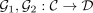
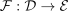
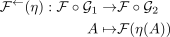
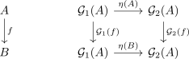
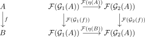
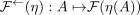

right whiskering
1. Definition / Proposition
Let  be categories,
be categories,

and
be functors.
Then for a natural transformation  , right whiskering of
, right whiskering of  with
with  is also canonically a natural transformation
is also canonically a natural transformation

2. Proof
By assumption, there exists a commutative diagram

Since functors by definition preserve commutative diagrams, it follows, that

Hence we get a natural transformation
